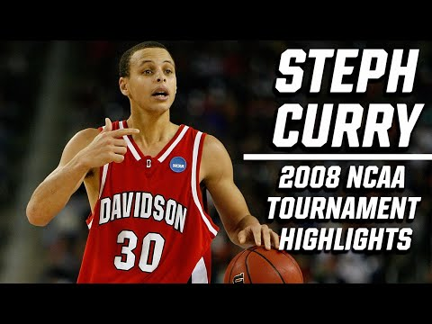
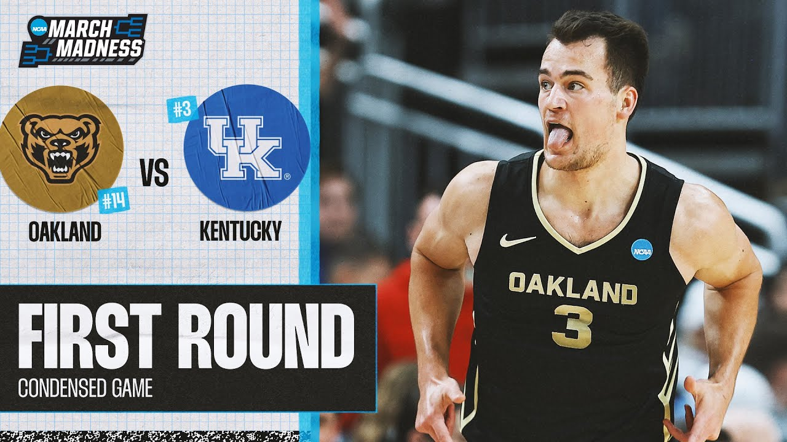

BYU / 201132FREDETTEOriginal jersey illustration
BEFORE THE NBA / 2008Before the rings.
Before the rings.
There was March.
Curry took little Davidson to the last eight. Meet the tournament that made his college story.
THE NEXT FIRST IMPRESSION
Three mobile homepages that bridge familiar basketball to an unfamiliar tournament. Tap through each concept, then compare the journeys.
Review mockups · English classroom version · November 18, 2026Recognition → curiosity

Curry took little Davidson to the last eight. Meet the tournament that made his college story.
Same handles. Different stakes.
US college teams. One loss and you’re out.
NOW IT’S YOUR CALL
You know basketball. Try three picks, then choose your champion.
Emotion → a first prediction

Love a hot hand? Jack Gohlke’s shooting helped Oakland knock out Kentucky.
THE MARCH DIFFERENCE
One loss ends your tournament. A lower-ranked team beating a favorite is an upset.
Participation → belonging
Bring your basketball instincts. Pick two winners, then your champion.
2026 Final Four teams · Practice challengeA BRACKET, IN ONE LINE
A bracket is your prediction of each game’s winner until one champion remains.
FROM “WHY SHOULD I CARE?” TO “THAT’S MY TEAM.”
Each route earns interest before explaining the full bracket.
WHAT INFORMED THE CONCEPTS
These are starting points for testing with Chinese basketball fans. Recognition, clip interest and willingness to share need to be checked with actual users.
Curry led No. 10 Davidson to the 2008 Elite Eight. BYU documents Fredette’s college honors and 2017 CBA International MVP award with Shanghai. The NBA and CBA routes therefore have real historical connections.
NCAA: Curry’s college run ↗BYU: Fredette in Shanghai ↗The NBA’s 2019 Tencent announcement combined short video, interactive experiences and mobile mini programs. It is a historical product precedent, not evidence of current rights or proof of NCAA conversion.
NBA: Tencent product approach (2019) ↗A 2025 UTS thesis studied 306 Tencent users and interviewed 16 NBA fans. It identifies convenience and social identity as relevant themes. Testing a short challenge and a friends route is our inference, not the study’s finding about NCAA.
Liang Xiao, UTS (2025) ↗Show the concepts in different orders to 6–9 Chinese fans across NBA, CBA and casual viewers. Ask: “What caught your attention?”, “What is March Madness?” and “Show me what you’d do next.” Record first tap, bracket understanding and practice completion before choosing a homepage.